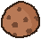

O jogo possui duas principais moedas para a realização de negócios. Essas são:
 Candy
Candy
|
Os candies são a moeda de circulação mais comum dentro da Instituição T, todos os alunos a usam para realizar o comercio, ela pode ser adquirida gratuitamente durante o decorres do jogo, através da venda de itens e da realização de desafios e missões. Os itens mais comuns e fáceis de se adquirir geralmente são comprados na loja com candies. |
 |
 Cookie
|
O cookie é a moeda especial de comercio dentro do colégio, todos nela cobiçam ter alguns, com ela é possível comprar os itens mais raros e especiais do jogo, como as Skins e os Temas. Os cookies são difíceis de se conseguir, para adquiri-los você precisa completar eventos especiais ou compra-los por fora do jogo mediante o pagamento de certas taxas. |
 |